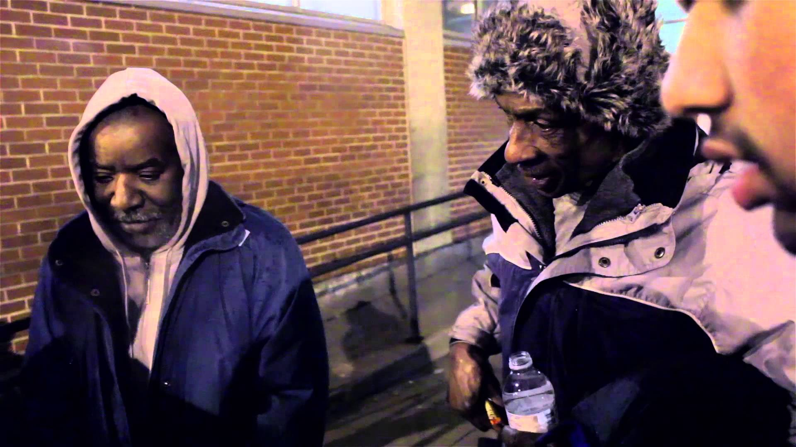

Partnerships
Your sponsorship of Second Chances demonstrates your commitment to people in need in our community and to clothing recycling/reuse. By contributing to our clothing donation program, you not only enable others to achieve their dreams for success and self-sufficiency, you help us build a stronger community through volunteerism, community philanthropy and relationship-building. We are honored to partner with our leadership sponsors listed to the right, and with many other individuals and community partners who make our work possible. Platinum, gold, silver, and bronze sponsors receive leadership recognition in Second Chances' publications and on our website.
We are honored to partner with our leadership sponsors listed to the right, and with many other individuals and community partners who make our work possible.
Platinum, gold, silver, and bronze sponsors receive leadership recognition in Second Chances' publications and on our website.
Event or newsletter sponsorship
Platinum sponsorship
Gold sponsorship
Silver sponsorship
Bronze sponsorship
Other opportunities to support Second Chances
- Host a clothing donation bin at one or more locations of your business or organization for at least one year;
- Hold one or more annual employee/customer/member clothing drives or yard sales to benefit Second Chances;
- Contribute any amount you can in support of Second Chances' ongoing programs and operations;
- Help us with marketing and publicity for our work, events and fundraising through your networks, social media, website and other publications;
- Help our operations through in-kind contributions like office supplies or equipment, food for our public events, or small gifts of appreciation for our volunteers;
- Donate the use of a conference room or reception area at your office for one of our meetings, public events or work with volunteers.

Donate to Winter Savers!
It is a privilage to be your brother's keeper